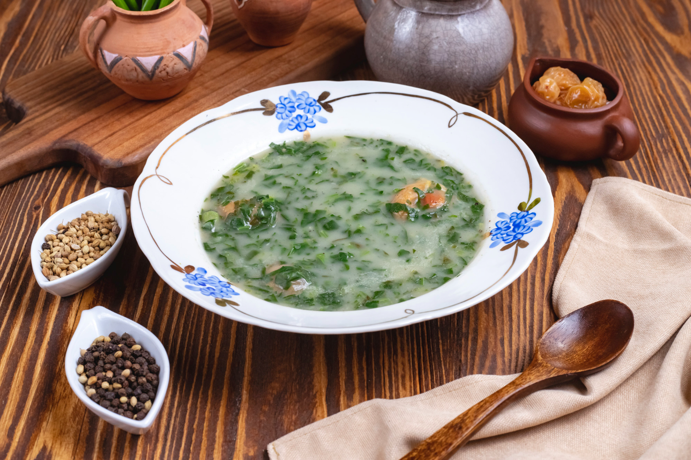

Home Page
Traditional Portuguese Soup: Caldo Verde

Description
Caldo Verde is one of Portugal's most iconic and beloved soups, known for its simplicity, comfort, and deep
cultural roots—especially in the northern regions like Minho.
Caldo Verde is typically served hot, drizzled with a bit of extra virgin olive oil and accompanied by broa de
milho (Portuguese cornbread). It's especially popular at family gatherings, festivals, and even after midnight
on New Year's Eve.
Despite its humble ingredients, Caldo Verde is rich in flavor and holds a cherished place in Portuguese culinary
tradition as a symbol of warmth and home.
Ingredients
- 200g of Galega cabbage (a type of Portuguese collard green)
- 1 Onion
- 2 Garlic cloves
- 600g of potatoes
- 1 Salpicão or meat chouriço (Portuguese smoked sausage)
- 50g Cornbread (Portuguese broa de milho)
- 150ml Olive oil
- Salt to taste
Steps
- Peel the potatoes, onion, and garlic cloves, and cook them in 1.5 liters of water seasoned with salt, a
drizzle of olive oil, and the chouriço. Meanwhile, prepare the cabbage leaves by washing them and cutting
them into fine julienne strips.
- When the potatoes are well cooked, remove the chouriço and mash the rest (potatoes, onion, and garlic) with
a fork or a potato masher. Return the mixture to the heat and, 10 minutes before serving, with the broth
boiling, add the well-drained cabbage. Let it cook uncovered until the cabbage is tender.
- Adjust the seasoning and add the remaining olive oil.
- Slice the chouriço and place a slice in each bowl or serving plate. Pour the hot caldo verde over it. Cut
the cornbread (broa) into slices to serve on the side.